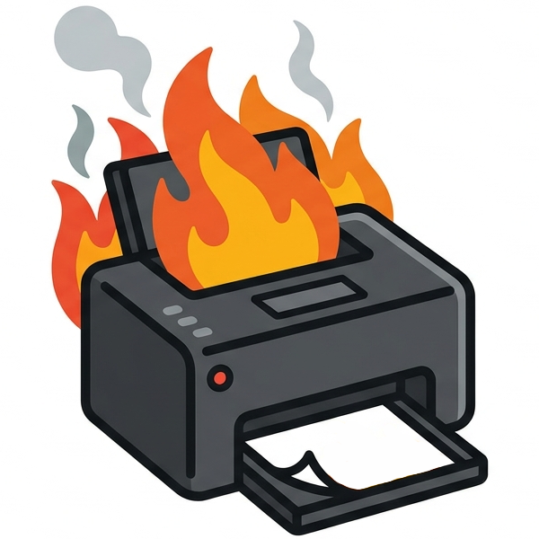

STAMPA FIRESysadmin Tools Against Malicious Printer Agon Force Inf Registration Engine
L'estintore definitivo per il deployment delle stampanti. Mappa IP, driver e posizioni in un file Excel e installa in batch le tue stampanti di rete su Windows 10/11 con un click.
Un foglio Excel come unica fonte di verità: il tool esegue l'intero flusso di installazione per ogni stampante.
Definisci nome, IP, cartella driver e file .inf in un foglio: niente comandi a mano.
Inietta il driver con pnputil, crea la porta TCP/IP e registra la stampante via PowerShell.
Ping opzionale prima di ogni installazione: salta le macchine non raggiungibili.
Se non indichi il nome del driver, viene letto automaticamente dal file .inf.
Ogni sessione produce un file di log dettagliato con l'esito di ogni stampante.
Rileva i privilegi di amministratore e propone l'elevazione automatica all'avvio.
Installa in batch le tue stampanti di rete partendo da un semplice file Excel.
Windows 10/11, Python 3.9+ e due moduli Python.
pip install openpyxl pillow
run_stampa_fire.bat (rileva Python, installa le dipendenze e avvia).python stampa_fire.py.StampaFire.exe (build PyInstaller, UAC integrata).All'avvio il programma cerca automaticamente un file Excel nella propria cartella
(printers.xlsx, printers_template.xlsx, stampanti.xlsx o il primo .xlsx trovato).
È sempre possibile sceglierne un altro con il pulsante Sfoglia oppure importare un file .csv.
La prima riga è l'intestazione con i nomi delle colonne. Parti da uno dei modelli pronti (stessi dati, formato a scelta) e modificalo con i tuoi dati:
⬇ Modello Excel (.xlsx) ⬇ Modello CSV (.csv)| Colonna | Descrizione |
|---|---|
nome_stampante | Nome con cui la stampante apparirà in Windows. |
ip | Indirizzo IP della stampante in rete. |
cartella_driver | Cartella contenente il file .inf (percorso UNC o locale). |
file_inf | Nome del file .inf del driver. |
| Colonna | Descrizione | Default |
|---|---|---|
nome_driver | Nome esatto del driver come da .inf. | auto-rilevato dal .inf |
porta | Nome della porta TCP/IP. | IP_xxx_xxx_xxx_xxx |
modello | Descrizione del modello (usata anche come hint per il rilevamento driver). | - |
posizione | Posizione (es. «Piano 2 - Ufficio Nord»). | - |
commento | Nota aggiuntiva. | - |
abilitata | FALSE/0/NO pre-deseleziona la riga. | TRUE |
nome_driver? Deve corrispondere
esattamente alla stringa presente nel file .inf, visibile anche in
Gestione dispositivi → Driver → Dettagli. Se lasci la colonna vuota, STAMPA FIRE
prova a leggerlo automaticamente dal .inf (usando modello come
suggerimento, se presente).
Selezionate le stampanti e premuto Installa selezionate, il flusso è:
.inf./add-driver: installa il pacchetto driver.Un codice di ritorno 3010 di pnputil indica che il
driver è installato ma richiede un riavvio: viene trattato come successo con un avviso.
Dal pulsante Stampanti installate puoi visualizzare le stampanti di rete
già presenti nel sistema e disinstallarle (con scelta dell'ambito: solo stampante, anche
porta e/o driver). Da qui puoi anche esportare l'elenco in CSV/Excel per
reimportarlo su un altro PC: le colonne cartella_driver e file_inf
vengono lasciate vuote perché il percorso del driver non è ricavabile dal sistema e va
compilato manualmente prima del reimport.
Ogni sessione di installazione genera un file in logs/
(stampafire_AAAAMMGG_HHMMSS.log). Dalla GUI, il pulsante
Apri file log apre l'ultimo log con il programma predefinito. Al termine
viene mostrato un riepilogo con l'esito di ogni stampante.